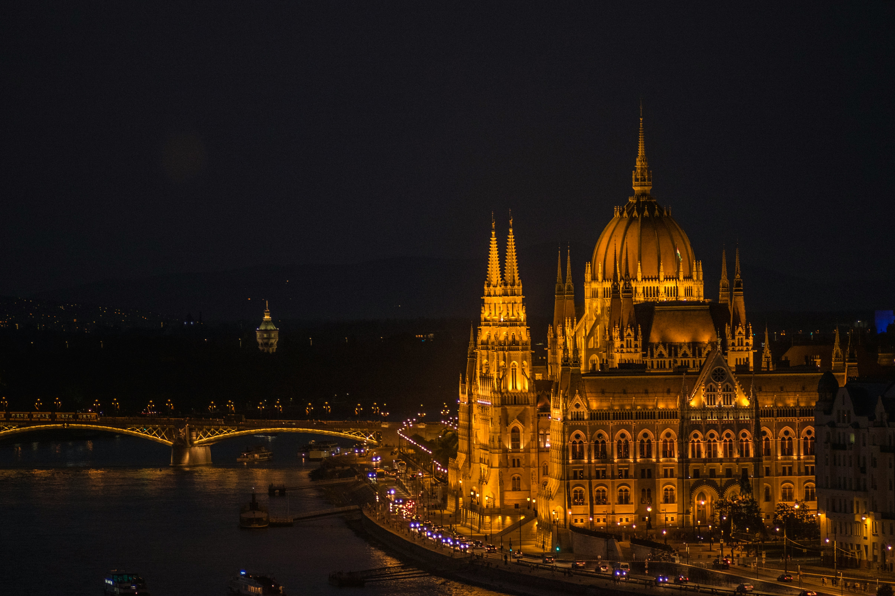

~БУДИМПЕШТА КРАЛИЦАТА НА ДУНАВ~
ДОЗНАЈТЕ КАКО ДА ЈА ПОСЕТИТЕ ПРАВИЛНО!
Будимпешта, главниот град на Унгарија, е вистинска комбинација на историја, култура и модерен живот. Позната како „Кралицата на Дунав“, градот е поделен на два дела – Будим и Пешта – поврзани со импресивни мостови кои ја раскажуваат неговата долга и фасцинантна приказна.
Прекрасната архитектура, термалните бањи, вкусната унгарска кујна и вечерниот живот ја прават Будимпешта еден од најомилените европски градови за туристи. Без разлика дали сакате да шетате по Дунав, да го посетите познатиот парламент, или да се опуштите во Сечени бањите – оваа метропола ќе ве освои на прв поглед.
🔹 Зошто да ја посетите Будимпешта?
- Импресивен парламент и величествена архитектура
- Термални бањи со вековна традиција
- Мостови кои ги поврзуваат двете страни на градот
- Романтични прошетки покрај Дунав
- Вкусна унгарска храна и традиционални десерти